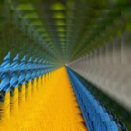

Видеообратная связь

Многократно рисует слой внутри себя, как камера, направленная на свой экран. Перемещайте, масштабируйте или вращайте слой, чтобы управлять туннелем.
Настройки
| Настройка | Тип | Диапазон | По умолчанию |
|---|---|---|---|
| Копии | Число | от 1 до 64 | 24 |
| Масштаб | Число | от 0.1 до 1.5 | 0.85 |
| Поворот | Угол | от -180° до 180° | 0° |
| Смещение | Точка (X, Y) | от -99999 px до 99999 px | 0 px, 0 px |
| Центр | Точка (X, Y) | от -99999 px до 99999 px | 0 px, 0 px |
| Использовать трансформацию слоя | Вкл. или выкл. | – | Вкл. |
| Затухание | Число | от 0 до 1 | 0.9 |
| Сдвиг оттенка | Угол | от -180° до 180° | 0° |
| Задержка | Число | от 0 s до 1 s | 0 s |
| Наложение | Выбор | Обычный, Сложение, Экран | Обычный |